품질경영기사 (2017-09-23 기출문제)
1과목: 실험계획법
1. 하나의 실험점에서 30, 40, 38, 49(단위 db)의 반복 관측치를 얻었다. 자료가 망대특성이라면 SN비 값은 약 얼마인가?
- -31.58db
- 31.48db
- -32.48db
- 31.38db
(정답률: 85%)

2. 화공물질을 촉매 반응시켜 촉매(A) 2종류, 반응온도(B) 2종류, 원료의 농도(C) 2종류로 하여 23요인실험으로 합성률에 미치는 영향을 검토하여 아래의 데이터를 얻었다. SA×B의 값은?
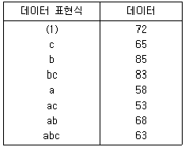
- 0.125
- 3.125
- 15.125
- 45.125
(정답률: 88%)
3. 두 변수 x와 y간의 n개의 데이터(xi, yi), I=1,2, …, n에 관한 직선회귀모형은 yi=β0+β1xi+ei이다. 여기서 β0, β1은 미지의 모수이며 ei~N(0,σ2)는 서로 독립인 오차를 나타내고 있다. 미지의 모수 β0, β1은 어떻게 추정하는가?
- xi의 평균값을 최소화시켜서(편미분하여) 구한다.
- xi의 합을 최소화시켜서(편미분하여) 구한다.
- 오차의 합을 최소화시켜서(편미분하여) 구한다.
- 오차의 제곱합을 최소화시켜서(편미분하여) 구한다.
(정답률: 91%)
4. 3×3 라틴방격법에 의하여 다음의 실험데이터를 얻었다. 요인 C의 제곱합(SC)을 구하면? (단, 괄호속의 값은 데이터이다.)
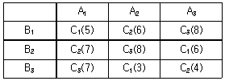
- 14.0
- 15.8
- 16.2
- 30.3
(정답률: 86%)
5. L27(313)형 직교배열표에서 요인 A를 5열, 요열 B를 10열에 배치하였다면, 교호작용 A×B가 배치되는 열 번호는?
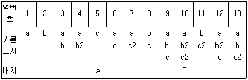
- 4열, 7열
- 4열, 10열
- 4열, 12열
- 4열, 13열
(정답률: 86%)
6. 어떤 작업의 가공순서를 2수준으로 하고 각각 5회씩 실험을 실시하여 다음과 같은 결과를 얻었다. 이 때, A1과 A2평균치의 차
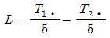
의 제곱합(SL)은 얼마인가?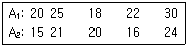
- 15.4
- 36.1
- 40.8
- 51.7
(정답률: 79%)
7. 23요인실험에서 정의대비를 A×B×C로 잡아 1/2일부실시법으로 실험을 실시하는 경우, A와 별명관계에 있는 요인은?
- B
- A×B
- B×C
- A×C
(정답률: 90%)
8. 세 가지의 공정 라인(A)에서 나오는 제품의 부적합품률이 같은가를 알아보기 위하여 샘플링 검사를 실시하였다. 작업 시간별(B)로 차이가 있는가도 알아보기 위하여 오전, 오후, 야간 근무조에서 공정 라이별로 각각 100개씩 조사하여 다음과 같은 데이터가 얻어졌다. 이 자료에서 A2 수준의 모부적합품률 P(A2)의 점추정치 값은 몇 %인가? (단위: 100개 중 부적합품개수)
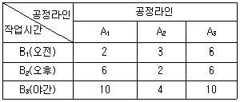
- 2
- 3
- 4
- 5
(정답률: 59%)
9. 어떤 화학반응 실험에서 농도를 4수준으로 반복수가 일정하지 않은 실험을 하여 다음 표와 같은 결과를 얻었다. 분산분석 결과 오차의 제곱합 Se=2508.8이었다. μ(A1)과 μ(A4)의 평균치 차를 α=0.⑤로 검정하고자 한다. 평균치의 차가 약 얼마를 초과할 때 평균치의 차가 있다고 할 수 있는가? (단, t0.975(15)=2.131, t0.95(15)=1.753이다.)
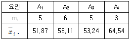
- 15.866
- 16.556
- 19.487
- 20.127
(정답률: 15%)
10. 반복이 일정한 1요인실험에서 데이터 구조식이 xij=μ+ai+eij(i=1,2,…,l,j=1,2,…,m)로 주어질 때
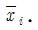
의 데이터 구조식은?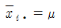
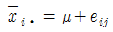
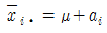
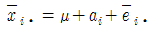
(정답률: 91%)
11. 로트 간 또는 로트 내의 산포, 기계간의 산포, 작업자간의 산포, 측정의 산포 등 여러 가지 샘플링 및 측정의 정도를 추정하여 샘플링 방식을 설계하거나 측정방법을 검토하기 위한 변량요인들에 대한 실험설계 방법으로 가장 적합한 것은?
- 지분실험법
- 교락법
- 라틴방격법
- 요인배치법
(정답률: 57%)
12. A, B, C가 모수요인이고, R이 변량요인이며, A는 어떤 화학용액으로 제조 후의 숙성시간이 일정한 조건을 유지해야 하며 사용시간의 제한으로 A1, A2, A3를 분할할 수밖에 없고 또한 실험물량을 최소화하기 위해 A, B요인을 1차 요인으로 하고 수준변화가 용이한 요인 C를 2차 요인으로 하여 실험을 수행할 때, 어떤 실험법이 가장 적절한가?
- 단일분할법
- 지분실험법
- 요인실험법
- 교락법
(정답률: 52%)
13. LS(27)형 직교배열표에 관한 설명 중 틀린 것은?
- 8은 행의 수 또는 실험횟수를 나타낸다.
- 각 열의 자유도는 1이고, 총자유도는 8이다.
- 2수준의 직교표이므로 일밙거으로 3수준을 배치시킬 수 없다.
- 교호작용을 무시하고 전부 요인으로 배치하면 7개의 요인까지 배치가 가능하다.
(정답률: 86%)
14. 모수요인 A와 변량요인 B의 수준이 각각 l과 m이고, 반복수가 r일 경우의 모형은 다음과 같다. E(VA)의 식으로 맞는 것은?
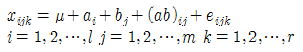
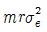
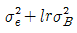
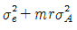
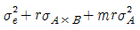
(정답률: 87%)
15. 요인 A, B는 모수요인, 요인 C는 변량요인인 반복 없는 3요인실험을 하였다. l=3, m=3, n=2이고, Ve=4.3, VA×C=106.7, VB×C=97.3, VC=57.4이였다면, σ2C의 추정값은 약 얼마인가?
- 4.8
- 5.9
- 6.4
- 28.7
(정답률: 53%)
16. 반복이 없는 23형의 교락법 실험에서 교호작용(A×B)을 블럭에 교락시킨 것으로 맞는 것은?
- 블럭 1: (1), a, c, bc
- 블럭 1: (1), a, ac, abc
- 블럭 1: (1), ab, c, abc
- 블럭 1: (1), ab, ac, bc
(정답률: 86%)
17. [표1]은 모수요인 A와 블록요인 B에 대해 난괴법 실험을 하는 경우이며 [표2]는 블록요인 B를 반복으로 하는 요인 A의 1요인실험으로 변환시킨 경우이다. 이때 A의 제곱합(SA)에 관한 설명으로 맞는 것은?
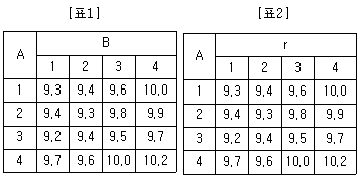
- 난괴법에서의 A의 제곱합(SA)보다 1요인실험의 제곱합(SA)이 더 크다.
- 난괴법에서의 A의 제곱합(SA) 보다 1요인실험의 제곱합(SA)이 더 작다.
- 난괴법에서의 A의 제곱합(SA)과 1요인실험의 제곱합(SA)이 같다.
- 난괴법에서의 A의 제곱합(SA)과 B의 제곱합(SA)를 합한 것과 1요인실험의 제곱합(SA)은 값이 같다.
(정답률: 20%)
18. 모수요인의 특성으로 볼 수 없는 것은? (단, ai는 요인 A의 주효과이다.)
- ai의 합은 0이다.
- ai의 평균은 0이다.
- ai의 분산(Var(ai))은 0이다.
- ai의 기댓값(E(ai))은 0이다.
(정답률: 42%)
19. 다음 데이터는 두 개의 모수요인 A와 B의 각 수준에서 실험된 것이다. 요인 A의 효과를 검정할 수 있는 F0값은 약 얼마인가? (단, 오차의 제곱합 Se=0.56이다.)
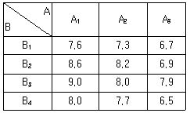
- 6.25
- 7.93
- 15.25
- 18.43
(정답률: 52%)
20. 실험의 효율을 올리기 위하여 취하는 행동 중 틀린 것은?
- 오차의 자유도를 최대한 작게 한다.
- 실험의 반복수를 최대한 크게 한다.
- 오차분산이 최대한 작아지도록 조치한다.
- 실험의 층별을 실시하여 충분히 관리되도록 한다.
(정답률: 88%)
2과목: 통계적품질관리
21. ∑c=80, k=20일 때 c관리도(count control chart)의 관리 하한(lower control limit)은?
- -3
- 2
- 10
- 고려하지 않는다.
(정답률: 57%)
22. 관리도에서 일반적으로 사용하는 3σ관리한계 대신에 2σ관리한계를 사용하면 그 결과는 어떻게 되는가?
- 제1종 오류(α)가 커진다.
- 제2종 오류(β)가 커진다.
- 제1종 오류(α), 제2종 오류(β) 모두 커진다.
- 제1종 오류(α), 제2종 오류(β) 모두 작아진다.
(정답률: 86%)
23. 계수형 샘플링검사 절차-제1부: 로트별 합격품질한계(AQL) 지표형 샘플링검사방식(KS Q IOS 2859-1 : 2014)의 보통검사에서 수월한 검사로 전환할 때 만족되야 하는 조건이 아닌 것은?
- 생산의 안정
- 연속 5로트 합격
- 소관 권한자의 승인
- 전환 점수의 현재 값이 30 이상일 떄
(정답률: 85%)
24. 계수 및 계량 규준형 1회 샘플링 검사(KS Q 0001 : 2013)에서 평균값 500g 이하는 합격시키고 평균값 540g 이상의 로트는 불합격시키고 싶다. 표준편차가 25g이며 α=0.⑤, β=0.10으로 샘플링 검사를 할 때 필요한 샘플 수(n)는? (단, Kα=1.645, Kβ=1.282이다.)
- 4
- 5
- 6
- 7
(정답률: 79%)
25. 계수 및 계량 규준형 1회 샘플링 검사(KS Q 0001:2013)에서 계수 규준형 1회 샘플링 검사방식 중 생산자 위험이 가장 큰 샘플링 방식은? (단, N은 로트의 크기, n의 표본의 크기, c는 합격판정개수이다.)
- N=1000, n=10, c=0
- N=1500, n=15, c=0
- N=2000, n=20, c=0
- N=3000, n=30, c=0
(정답률: 83%)
26. 두 집단의 모평균 차의 구간추정에 있어서 σ21, σ22를 알고 있고, σ21=σ22=σ2, n1=n2=n일 떄(
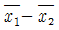
)의 표준편차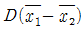
는?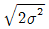
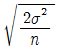
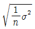
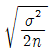
(정답률: 81%)
27. A자동차는 신차구입 후 5년 이상 자동차를 보유하는 고객의 비율을 추정하기를 원한다. 신뢰수준 95%에서 오차한계가 ±0.⑤로 하기 위해서 필요한 최소의 표본크기는 약 얼마인가?
- 373
- 380
- 382
- 385
(정답률: 9%)
28. 품질변동 원인 중 우연원인에 해당하지 않는 것은?
- 피할 수 없는 원인이다.
- 점들의 움직임이 임의적이다.
- 작업자의 부주의나 태만, 생산설비의 이상 등으로 인해서 나타나는 원인이다.
- 현재의 능력이나 기술 수준으로는 원인규명이나 조치가 불가능한 원인이다.
(정답률: 80%)
29. 어느 농장에서 양이 염소보다 평소 2배 더 많은 것으로 알고 있다. 이 주장을 검정하기 위하여 농장의 표본을 조사하였더니, 양은 2500마리, 염소는 500마리였다. 적합도 검정을 하고자 할 때, 검정 통계량(X20)값은 얼마인가?
- X20=125
- X20=250
- X20=300
- X20=375
(정답률: 43%)
30. A자동차 회사의 신차종 K자동차는 신차 판매 후 30일 이내에 보증수리를 받을 확률이 5%로 알려져 있다. 신규 판매한 자동차 5대를 추출하여 30일 이내에 보증수리를 받는 차량수의 확률에 관한 내용으로 틀린 것은?
- 보증수리를 1대도 받지 않을 확률은 약 0.774이다.
- 적어도 1대가 보증수리를 필요로 할 확률은 약 0.226이다.
- X를 보증수리를 받는 차량수라 할 때, X의 기댓값은 0.25이다.
- X를 보증수리를 받는 차량수라 할 때, X의 분산은 약 0.27이다.
(정답률: 41%)
31. 정규분포를 따르는 모집단의 모평균에 관한 검정의 검출력에 대한 설명 중 맞는 것은? (단, 귀무가설은 H0:μ=μ0이다.)
- 다른 조건을 모두 같게 했을 때 모 펴준편차 σ가 크면 검출력은 커진다.
- 다른 조건을 모두 같게 했을 때 표본의 크기 n을 증가시키면 검출력은 작아진다.
- 다른 조건을 모두 같게 했을 때 제2종 오류(β)의 값을 작게 하면 검출력은 커진다.
- 다른 조건을 모두 같게 했을 때 모평균의 값과 기준치와의 차(μ-μ0)가 크면 검출력은 작아진다.
(정답률: 49%)
32. 계수 및 계량 규준형 1회 샘플링 검사(KS Q 0001:2013)의 평균치 보증 방식에서 맘소특성인 경우, OC곡선을 작성하기 위한 로트의 합격확률 L(m)의 표준정규분포에서의 좌표값 KL(m)을 구하기 위한 공식은? (단, U는 규격상한, m은 로트의 평균치,
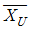
는 상한합격 판정치, σ는 로트의 표준편차, n은 샘플의 크기이다.)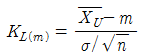
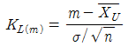
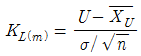
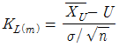
(정답률: 44%)
33. X1, …, Xn을 평균(μ), 분산(σ2)인 모집단으로부터 뽑은 확률표본이라 하고 표본평균을
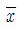
, 표본분산을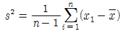
으로 정의할 때, 통계량 s2의 기대치 E(s2)은?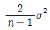
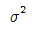
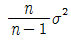
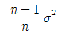
(정답률: 14%)
34. 일반적으로 R관리도에서는 ( ㉠ )의 변화를
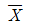
관리도에서는 ( ㉡ )의 변화를 검토할 수 있다. ㉠, ㉡에 알맞은 용어로 짝지어진 것은?- ㉠ 정확도, ㉡ 정밀도
- ㉠ 정밀도, ㉡ 정확도
- ㉠ 정밀도, ㉡ 오차
- ㉠ 오차, ㉡ 정밀도
(정답률: 44%)
35. 두 집단의 모부적합수 차에 대한 통계적 가설검정을 정규분포 근사를 활용할 때, 검정 통계량(u0)의 값은 얼마인가? (단, 두 집단 각각의 부적합수 x1=10, x2=6이다.)
- 1
- 2
- 3
- 4
(정답률: 4%)
36. 공정의 평균치가 28이고, 모표준편차(σ)가 10으로 알려져 있는 공정이 관리상태일 때 규격상한(U)이 40을 넘는 제품이 나올 확률은 약 얼마인가?
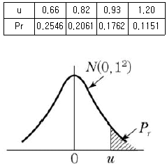
- 0.1151
- 0.1762
- 0.2061
- 0.2546
(정답률: 44%)
37. 계량치 검사를 위한 축차 샘플링 방식(부적합품률, 표준편차 기지)(KS Q ISO 8425:2009)에서 연결식 양쪽규격이고, ncum＜nt일 때, 상측 합격 판정치 A(U)는? (단, g는 합격 판정선 및 불합격 판정선의 기울기, hA는 합격 판정선의 절편이다.)
- gσncum-hAσ
- gσncum+hAσ
- (U-L-gσ)ncum-hAσ
- (U-L-gσ)ncum+hAσ
(정답률: 68%)
38. 어떤 부품의 제조공정에서 종래 장기간의 공정평균 부적합품률 9% 이상으로 집계되고 있다. 부적합품률을 낮추기 위해 최근 그 공정의 일부를 개선한 후 그 공정을 조사하였더니 167개의 샘플 중 8개가 부적합품이었으며, 귀무가설 H0:P≥P0는 기각되었다. 공정평균 부적합품률의 95% 위쪽 신뢰한계는 약 얼마인가?
- 0.045
- 0.065
- 0.075
- 0.085
(정답률: 35%)
39. 표본상관계수(rxy)를 구하는 식으로 틀린 것은? (단, 확률변수 X, Y의 곱의 합은 Sxy, 확률변수 X의 제곱합은 Sxx, 확률변수 Y의 제곱합은 Syy, 공분산은 Vxy, X의 분산은 Vx, Y의 분산은 Vy, n은 표본의 수이다.
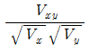
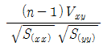
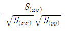
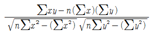
(정답률: 38%)
40. 샘플링오차에 관한 설명으로 틀린 것은?
- 샘플링오차와 측정오차는 비례관계를 가진다.
- 전수검사를 할 경우 이론적으로 샘플링오차는 없다.
- 시료의 크기가 클수록 샘플링오차는 작아진다.
- 샘플링오차는 표본을 랜덤하게 샘플링하지 못함으로 인해 발생하는 오차이다.
(정답률: 47%)
3과목: 생산시스템
41. 휴대전화의 플래시 메모리 1로트를 생산하는데 소요시간은 다음과 같다. 이 때 라인불균형률(1-Eb)을 구하면 약 얼마인가?
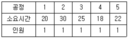
- 23%
- 25%
- 75%
- 80%
(정답률: 65%)
42. 원단위란 제품 또는 반제품의 단위수량 당 자재별 기준소요량을 의미하며, 이러한 원단위를 산출하는 데에는 여러 방법이 있다. 원단위 산출방법이 아닌 것은?
- 실적치에 의한 방법
- 이론치에 의한 방법
- 연속치를 고려하는 방법
- 시험 분석치에 의한 방법
(정답률: 66%)
43. 플랜트 공장에서 1개월(30일) 중 27일을 가동하였다. 1일 작업시간은 24시간이고, 기준 생산량은 1일 1000톤이다. 1개월간 실제생산량은 24000톤이고, 실제 생산량 중 150톤은 부적합품이었다면 시간가동률은 얼마인가?
- 90%
- 93%
- 95%
- 97%
(정답률: 61%)
44. 스툽워치(stopwatch)에 의한 시간연구를 할 경우, 시간 관측 방법으로써 측정하기 힘들 정도로 요소작업이 너무 짧을 때에 사용되며, 몇 개의 요소작업을 번갈아 한 그룹으로 측정하여 시간치를 계산하는 방법은?
- 계속법
- 순환법
- 반복법
- 누적법
(정답률: 6%)
45. 4가지 부품을 1대의 기계에서 가공하려고 한다. 처리일수 및 잔여납기일수는 다음의 표와 같을 때, 최단작업시간규칙을 적용할 경우 평균처리일수는 얼마인가?
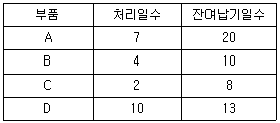
- 10일
- 11일
- 12일
- 13일
(정답률: 65%)
46. 광원을 일정한 시간간격으로 비대칭적인 밝기로 점멸하면서 사진을 촬영하여 분석하는 방법으로 작업의 속도, 방향 등의 궤적을 파악할 수 있는 것은?
- 시모차트
- 양수 동작분석표
- 작업자 공정분석표
- 크로노사이클 그래프
(정답률: 69%)
47. 리(H. Lee)가 주장한 4가지 유형의 ‘공급사슬전략’과 ‘수요-공급이 불확실성’ 및 ‘기능적, 혁신적 상품’의 연결 관계로 틀린 것은?
- 효율적 공급사슬-수요 및 공급 불확실성 낮음-식품
- 민첩성 공급사슬-수요 및 공급 불확실성 높음-반도체
- 반응적 공급사슬-수요 불확실성 높음, 공급 불확실성 낮음-패션의류
- 위험방지 공급사슬-수요 불확실성 낮음, 공급 불확실성 높음-팝뮤직
(정답률: 63%)
48. 재고시스템에서 재주문점의 수준을 결정하는 요인이 아닌 것은?
- 재고유지비용
- 수요율과 조달기간
- 수요율과 조달기간 변동의 정도
- 감내할 수 있는 재고부족 위험의 정도
(정답률: 38%)
49. 설비배치의 형태에 영향을 주는 요인이 아닌 것은?
- 품목별 생산량
- 운반설비의 종류
- 생산품목의 종류
- 표준시간의 설정방법
(정답률: 59%)
50. 구매관리 방식 중 집중구매방식의 특성으로 틀린 것은?
- 종합구매로 구매비용이 적게 든다.
- 공장별 자재의 긴급조달이 용이하다.
- 대량구매로 가격과 거래조건이 유리하다.
- 시장조사, 거래처조사, 구매효과의 측정 등을 효과적으로 실행할 수 있다.
(정답률: 52%)
51. 포드시스템에서 제시된 생산관리의 합리화 원칙으로 불리는 3S로 맞는 것은?
- 표준화, 전문화, 규격화
- 단순화, 표준화, 전문화
- 전문화, 신속화, 단순화
- 규격화, 단순화, 표준화
(정답률: 38%)
52. MRP시스템 운영에 필요한 기본요소 중 최종품목 한 단위 생산에 소요되는 구성품목의 종류와 수량을 명시한 것은?
- 자재명세서
- 발주점
- 재고기록철
- 주생산일정계획
(정답률: 46%)
53. JIT 생산방식의 특징으로 틀린 것은?
- U자형 설비배치
- 고정적인 직무할당
- 생산준비시간의 최소화 추구
- 필요한 양만큼 제조 및 구매
(정답률: 44%)
54. 고장이 일어나기 쉬운 부분에 감도가 높은 계측장비를 연결하여 기계설비의 트러블을 모니터링 함으로써 사전에 고장위험을 검출하는 보전활동방식은?
- 사후보전
- 개량보전
- 예지보전
- 보전예방
(정답률: 49%)
55. 한구회사의 Y제품 가격이 1,500원, 한계이익률이 0.75일 때, 생산량은 150개이다. 고정비는 얼마인가?
- 975원
- 1,388원
- 18,475원
- 168,750원
(정답률: 43%)
56. A회사는 조립작업장에 대해 하루 8시간 근무시간에서 오전, 오후 각각 20분간의 휴식 시간을 주고 있다. 과거의 데이터를 분석해 보면 컨베이어벨트가 정지하는 비율이 4%이고, 최종검사 과정에 5%의 부적합품률이 발생했다. 이 경우 일간 생산량인 1,000개일 때, 피치타임(pitch time)은 약 얼마인가?
- 0.20
- 0.30
- 0.40
- 0.50
(정답률: 43%)
57. 제품 A의 1월 수요예측치는 500개, 실제 1월의 수요는 450개였다. 평활상수 α=0.1인 단순지수평활법을 이용한 제품 A의 2월 수요예측치는?
- 445개
- 455개
- 495개
- 5⑤개
(정답률: 31%)
58. 다음의 표는 M회사의 시간연구자료이다. 이 자료를 활용하여 단위당 표준시간을 구하면 약 얼마인가?
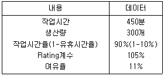
- 0.16분
- 1.43분
- 1.59분
- 1.65분
(정답률: 15%)
59. 간트차트에 대한 설명 중 틀린 것은?
- 일정계획의 변경에 융통성이 강하다.
- 작업장별 작업성과를 비교할 수 있다.
- 작업의 계획과 실적을 명확히 파악할 수 있다.
- 계획된 작업과 실적은 같은 시간 축에 횡선으로 표시하여 계획과 통제를 할 수 있는 봉도표이다.
(정답률: 20%)
60. 총괄생산계획(APP)의 문제를 경험적 내지 탐색적 방법으로 해결하려는 기법은?
- 선형계획법(LP)
- 선형결정기법(LDR)
- 도시법(Graph method)
- 휴리스틱기법(Heuristic approach)
(정답률: 29%)
4과목: 신뢰성관리
61. 신뢰성 축차샘플링 검사에서 사용되는 공식 중 틀린 것은?
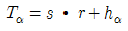
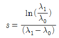
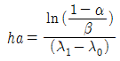
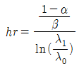
(정답률: 45%)
62. 수명시험 방식 중 정시중단방식의 설명으로 맞는 것은?
- 정해진 시간마다 고장수를 기록하는 방식
- 미리 고장갯수를 정해놓고 그 수의 고장이 발생하면 시험을 중단하는 방식
- 미리 시간을 정해놓고 그 시간이 되면 고장수에 관계없이 시험을 중단하는 방식
- 미리 시간을 정해놓고 그 시간이 되면 고장난 아이템에 관계없이 전체를 교체하는 방식
(정답률: 47%)
63. 가속수명시험을 위한 가속모델 중에서 확장된 아일링(Generalized Eyring)모델이 알헨니우스(Arrhenius)모델과 특히 다른 점은?
- 가속인자로 온도만 사용
- 두 모델에는 차이가 없음
- 가속인자로 온도와 습도 2개를 사용
- 가속인자로 온도 외의 다른 인자도 사용
(정답률: 32%)
64. Y부품의 요구 신뢰도는 0.96인데 시주에서 구입 가능한 이 부품의 신뢰도는 0.8밖에 되지 않는다. 따라서 이 부품이 사용되는 부분을 병렬 리던던시(Redundancy) 설계를 사용하기로 하였다. 요구되는 최소 병렬 부품수(n)는 몇 개인가?
- 1
- 2
- 3
- 4
(정답률: 38%)
65. 와이블(Weibull) 확률지에 관한 설명으로 맞는 것은?
- 관측 중단 데이터가 있으면 사용할 수 없다.
- 분포의 몰수를 확률지로부터 추정할 수 있다.
- 와이블 분포는 타점 후 반드시 원점을 지나는 직선이 나오게 된다.
- H(t)를 누적고장률함수라고 할 때, H(t)가 t의 선형함수임을 이용한 것이다.
(정답률: 19%)
66. 와이블 분포에서 형상모수 값은 2.0, 척도모수 값은 3604.7, 위치모수 값은 0으로 추정된 경우, 평균수명은 약 몇 시간인가? (단,
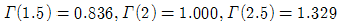
이다.)- 2.6hr
- 3013.5hr
- 3604.7hr
- 4790.6hr
(정답률: 19%)
67. m/n계(n중 m구조) 리던던시에 관한 설명으로 맞는 것은?
- m=n일 때, 병렬 리던던시가 된다.
- m=1일 때, 병렬 리던던시가 된다.
- m=2일 때, 병렬 리던던시가 된다.
- 직렬 리던던시는 n중 m구조로 설명할 수 없다.
(정답률: 17%)
68. 취급ㆍ조작, 서비스, 설치환경 및 운용에 관한 것으로서 제품의 신뢰도를 증가시키는 것이 아니고, 설계와 제조과정에서 형성된 제품의 신뢰도를 장기간 보존하려는 신뢰성은?
- 동작 신뢰성
- 고유 신뢰성
- 신뢰성 관리
- 사용 신뢰성
(정답률: 10%)
69. 우발고장기간에 발생하는 고장의 원인이 아닌 것은?
- 노화
- 과중한 부하
- 사용자의 과오
- 낮은 안전계수
(정답률: 30%)
70. 와이블 분포가 지수분포와 동일한 특성을 갖기 위한 형상모수(m)의 값은 얼마인가?
- 0.5
- 1.0
- 1.5
- 2.0
(정답률: 25%)
71. 20개의 제품에 대해 5000시간의 수명시험을 실시한 실험결과 6개의 고장이 발생하였다. 고장시간은 다음과 같다. 고장시간이 지수분포를 따른다고 가정할 때, 고장률을 구하면 약 얼마인가?
- 0.000076hr
- 0.00018hr
- 0.00025hr
- 0.00068hr
(정답률: 23%)
72. 그림의 고장목(FT)에서 정상사상의 고장확률은 얼마인가? (단, 기본사상의 고장확률은 P(A)=0.002, P(B)=0.003, P(C)=0.004이다.)
- 1.2×10-11
- 4.8×10-11
- 3.6×10-8
- 6×10-6
(정답률: 15%)
73. 부하-강도 모델에서 μX, μY의 거리가 nX, nY일 때, 안전계수식으로 맞는 것은? (단, 부하평균: μX, 강도평균: μY, 부하표준편차:σX, 강도표준편차:σY이다.)
(정답률: 18%)
74. FMEA의 실시절차의 순서로서 맞는 것은?
- ㉠→㉡→㉣→㉢→㉤
- ㉣→㉡→㉠→㉢→㉤
- ㉠→㉣→㉡→㉤→㉢
- ㉣→㉡→㉠→㉤→㉢
(정답률: 12%)
75. 10000시간당 고장률이 각가 25, 38, 15, 50, 102인 지수분포를 따르는 부품 5개로 구성된 직렬시스템의 평균수명은 약 몇 시간인가?
- 36.29시간
- 40.12시간
- 43.48시간
- 50.⑤시간
(정답률: 16%)
76. 평균고장률 λ, 평균수리율 μ인 지수분포를 따를 경우 평균수리시간(MTTR)을 맞게 표현한 것은?
(정답률: 17%)
77. 어떤 시스템을 80시간 동안(수리기간 포함) 연속 사용한 경우 5회의 고장이 발생하였고, 각각의 수리시간이 1.0, 2.0, 3.0, 4.0, 5.0시간이었다면 이 시스템의 가용도(Availability)는 약 얼마인가?
- 81%
- 85%
- 88%
- 89%
(정답률: 10%)
78. 소시료 신뢰성 실험에서 평균순위법의 고장률 함수를 맞게 표현한 것은? (단, n은 시료의 수, I는 고장순번, ti는 I번째 고장발생시간이다.)
(정답률: 10%)
79. 신뢰성 설계기술 중 시스템을 구성하며 각 부품에 걸리는 부하에 여유를 두고 설계하는 기법은?
- 내환경성 설계
- 디레이팅(Derating) 설계
- 설계심사(Design Review)
- 리던던시(Redundancy) 설계
(정답률: 20%)
80. 신뢰도 함수 R(t)를 표현한 것으로 맞는 것은? (단, F(t)는 고장분포함수, f(t)는 고장 밀도함수이다.)
(정답률: 12%)
5과목: 품질경영
81. A.R Tenner는 고객만족을 충분히 달성하기 위해서 “고객의 목소리에 귀를 기울이는 것”을 단계 1, “소비자의 기대사항을 완전히 이해하는 것”을 단계 2로 정의하였다. 다음 중 단계 3인 완전한 고객 이해를 위한 적극적 마케팅 방법이 아닌 것은?
- 시장 시험(market test)
- 벤치마킹(benchmarking)
- 판매기록 분석(sales record analysis)
- 포커스 그룹 인터뷰(focus group interview)
(정답률: 21%)
82. 생산되는 제품의 품질에 문제가 발생하였을 경우 이에 대한 현상을 파악하기 위하여 여러 가지 도구가 활용된다. 다음 중 원인분석을 위해 사용되는 도구가 아닌 것은?
- 계통도법
- 특성요인도
- 연관도법
- 애로우 다이어그램
(정답률: 20%)
83. 품질경영시스템- 기본사항과 용어(KS Q ISO 9000:2015)에서 명시한 용어 중 “요구사항을 명시한 문서”를 무엇이라 하는가?
- 정보
- 시방서
- 품질매뉴얼
- 객관적 증거
(정답률: 17%)
84. 품질비용 중에서 평가비용에 해당되는 것은?
- 클레임 비용
- A/S 수리비용
- 폐기물 손실자재비
- 원자재 수입검사 비용
(정답률: 22%)
85. 품질문제 해결과정에서 이용되는 수법 중 80:20법칙이 적용되는 것은?
- 산점도
- 파레토도
- 친화도
- 특성요인도
(정답률: 24%)
86. 표준을 적용기간에 따라 분류할 때 시한표준에 관한 설명으로 맞는 것은?
- 일반적인 표준은 모두 이것에 속하며 적용개시의 시기만 명시한 것이다.
- 특정 활동을 추진함을 목적으로 하며, 적용의 개시시기 및 종료기한을 명시한 표준이다.
- 어떤 표준을 기획할 때 잠정적임을 전제로 하며 잠정적으로 관리하기 위해 작성하는 것이다.
- 정식표준을 제정하기에는 아직 조건이 갖추어져 있지 않지만 방치하면 혼란이 예상되는 경우 작성한다.
(정답률: 20%)
87. 품질경영시스템-요구사항(ISO 9001:2015)에서 품질경영원칙에 속하지 않는 것은?
- 리더십
- 품질 시스템
- 고객증시
- 인원의 적극참여
(정답률: 23%)
88. 게이지 R&R 평가 결과 %R&R이 8.5%로 나타났다. 이 계측기에 대한 평가와 조치로서 맞는 것은?
- 계측기 관리가 전혀 되지 않고 있으므로 이 계측기는 폐기해야만 한다.
- 계측기의 관리가 매우 잘되고 있는 편이므로 그대로 적용하는데 큰 무리가 없다.
- 계측기 관리가 미흡하며, 반드시 계측기 오차의 원인을 규명하고 해소시켜 주어야만 한다.
- 계측기의 수리비용이나 계측오차의 심각성 등을 고려하여 조치여부를 선택적으로 결정해야 한다.
(정답률: 23%)
89. 사내표준화 활동 시 치수의 단계를 결정할 때 사용하는 표준수 중 증가율이 가장 큰 기본수열은?
- R5
- R10
- R40
- R80
(정답률: 22%)
90. 품질에 대한 책임은 전 부서의 공동책임이기 때문에 무책임이 되기 쉽다. 이에 각 부서별로 품질에 대해 책임지는 업무내용의 연관성에 관한 설명으로 틀린 것은?
- 품질수준 결정에는 생산, 검사부서가 관계가 깊다.
- 공정 내 품질측정은 생산, 검사부서가 관계가 깊다.
- 품질코스트 분석은 회계, 품질관리 부서가 관계가 깊다.
- 불만 데이터 수집 및 분석은 판매, 설계, 품질보증 부서가 관계가 깊다.
(정답률: 23%)
91. 사내표준화가 갖는 특징으로 틀린 것은?
- 하나의 기업 내에서 실시하는 표준화 활동이다.
- 정해진 사내표준은 모든 조직원이 의무적으로 지켜야 한다.
- 일단 정해진 표준은 변경됨이 없이 계속 준수되어야 한다.
- 사내 관계자들의 합의를 얻은 다음에 실시해야 하는 활동이다.
(정답률: 17%)
92. 측정시스템에서 안정성(stability)에 대한 설명으로 틀린 것은?
- 안정성의 분석 방법으로 계랑치 관리도를 이용하는 방법이 대표적이다.
- 안정성 분석 방법에서 산포관리도는 측정과정의 변동을 반영하는 관리도이다.
- 안정성은 계측기의 측정 점위 내에서 오차, 재현성과 반복성을 회귀식을 이용하여 평가하는 것이다.
- 안정성 분석 방법에서 산포관리도가 이상상태일 경우 측정시스템의 반복성이 불안정함을 나타낸다.
(정답률: 9%)
93. 품질보증(QA)활동 중 제품기획의 단계에 관한 설명으로 틀린 것은?
- 시장단계에서 파악한 고객의 요구를 일상용어로 변환시키는 단계이다.
- 새로 사용될 예정인 부품에 대하여 신뢰성 시험을 선행 실시하여 품질을 확인한다.
- 신제품을 기획하고 있는 동안 기획 이후의 스텝에서 발생될 우려가 있는 문제점을 찾아내는 단계이다.
- 기획은 QA의 원류에 위치하므로 품질에 관해서 예상되는 기술적인 문제점은 될 수 있는대로 많이 찾아내도록 한다.
(정답률: 15%)
94. 모토로라에서 시작된 6시그마 활동에 관한 설명으로 틀린 것은?
- 공정능력지수(CP)=2.0을 목표로 하는 활동이다.
- 6시그마란 목표치에서 주어진 상ㆍ하한 규격한계지의 σ여유폭을 의미한다.
- 공정품질 특성치의 평균값이 목표치에 위치하고 있다고 가정할 때 부적합품률 3.4ppm을 목표로 한다.
- 6시그마 활동은 품질우연변동요인을 고려하여 최소공정능력지수(CPK)는 CPK≥1.5를 실현하려는 노력이다.
(정답률: 14%)
95. 어떤 품질특성의 규격값이 12.0±2.0으로 주어져 있다. 평균이 11.5, 표준편차가 0.5라고 할 때 최소공정능력지수(CPK)는 얼마인가?
- 0.67
- 0.75
- 1.00
- 1.33
(정답률: 19%)
96. 결과에 원인이 어떻게 관계하고 있으며, 어떤 영향을 주고 있는가를 한 눈에 알 수 있도록 작성하는 것은?
- 체크시트
- 히스토그램
- 파레토도
- 특성요인도
(정답률: 19%)
97. 기업이 고객과 관련된 조직의 내ㆍ외부정보를 층별ㆍ분석ㆍ통합하여 고객중심자원을 극대화하고, 고객특성에 맞는 마케팅활동을 계획ㆍ지원ㆍ평가하는 방법으로 장기적인 고객관리를 가능하게 하는 기법은?
- 고객만족(CS)
- 고객의 소리(VOC)
- 고객관계관리(CRM)
- 고객핵심요구사항(CCR)
(정답률: 26%)
98. 표준화란 어떤 표준을 정하고 이에 따르는 것 또는 표준을 합리적으로 설정하여 활용하는 조직적인 행위이다. 표준화의 원리에 해당되지 않는 것은?
- 규격은 일정한 기간을 두고 검토하여 필요에 따라 개성하여야 한다.
- 규격을 제정하는 행동에는 본질적으로 선택과 그에 이어지는 과정이다.
- 표준화란 본질적으로 전문화의 행위를 위한 사회의 의식적 노력의 결과이다.
- 표준화란 경제적, 사회적 활동이므로 관계자 모두의 상호협력에 의하여 추진되어야 할 것이다.
(정답률: 14%)
99. 3개의 부품을 조립하려고 한다. 각각의 부품의 허용차가 ±0.03, ±0.02, ±0.⑤일 때 조립품의 허용차는 약 얼마로 하면 좋겠는가?
- ±0.0019
- ±0.0038
- ±0.0062
- ±0.0616
(정답률: 18%)
100. 기업에서 제조물 책임 방어대책(PLD)의 사전대책으로 볼 수 없는 것은?
- 책임의 한정
- 응급체계구축
- 손실의 분산
- 사용방법의 보급
(정답률: 16%)
SN비 = 20log10(신호의 평균값 / 잡음의 표준편차)
주어진 자료에서 신호의 평균값은 (30+40+38+49)/4 = 39.25이고, 잡음의 표준편차는 9.77이다. 따라서,
SN비 = 20log10(39.25/9.77) ≈ 31.48db
따라서, 정답은 "31.48db"이다.